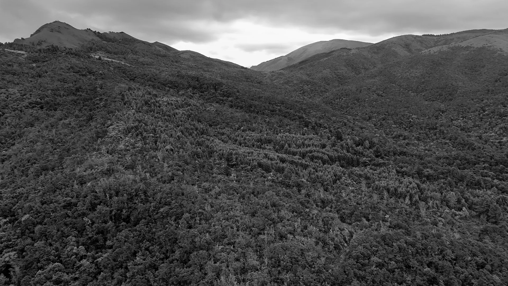
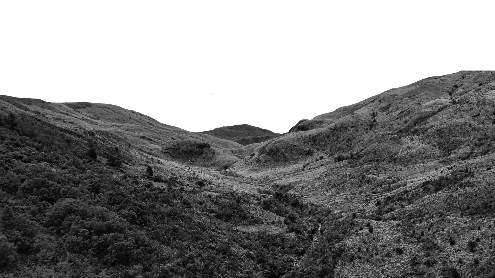
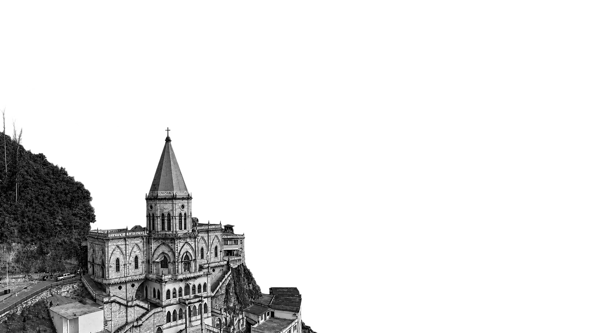
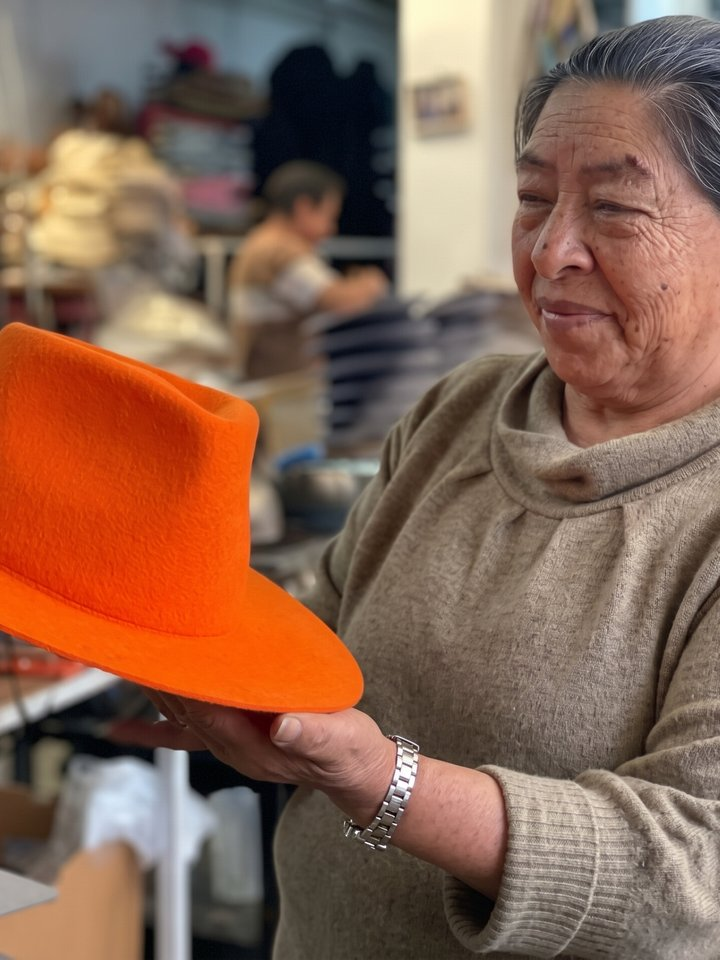
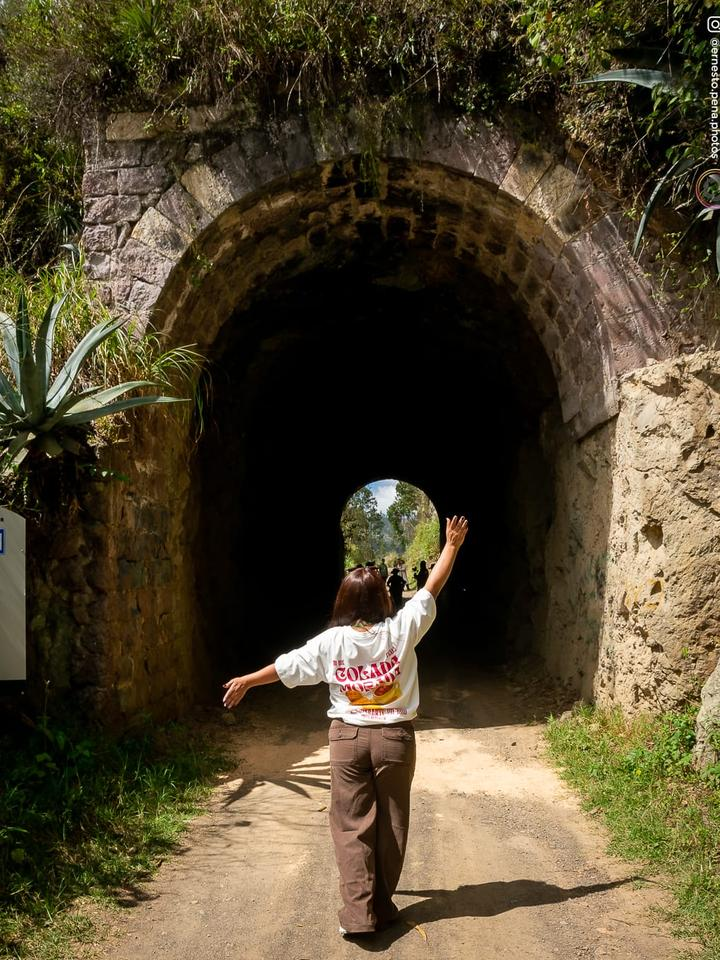
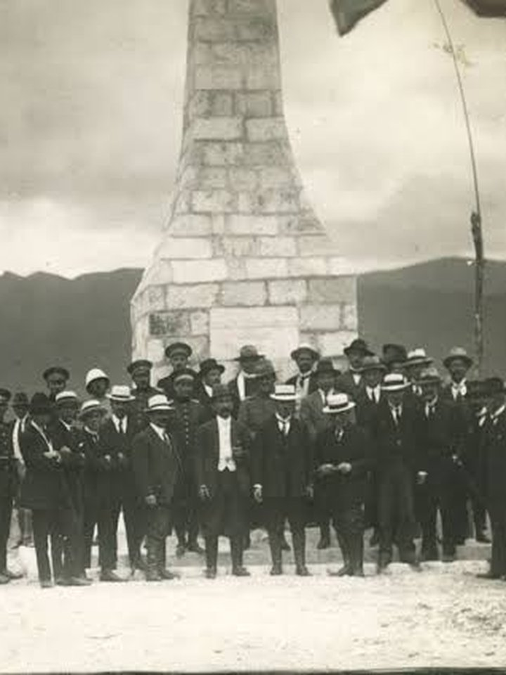
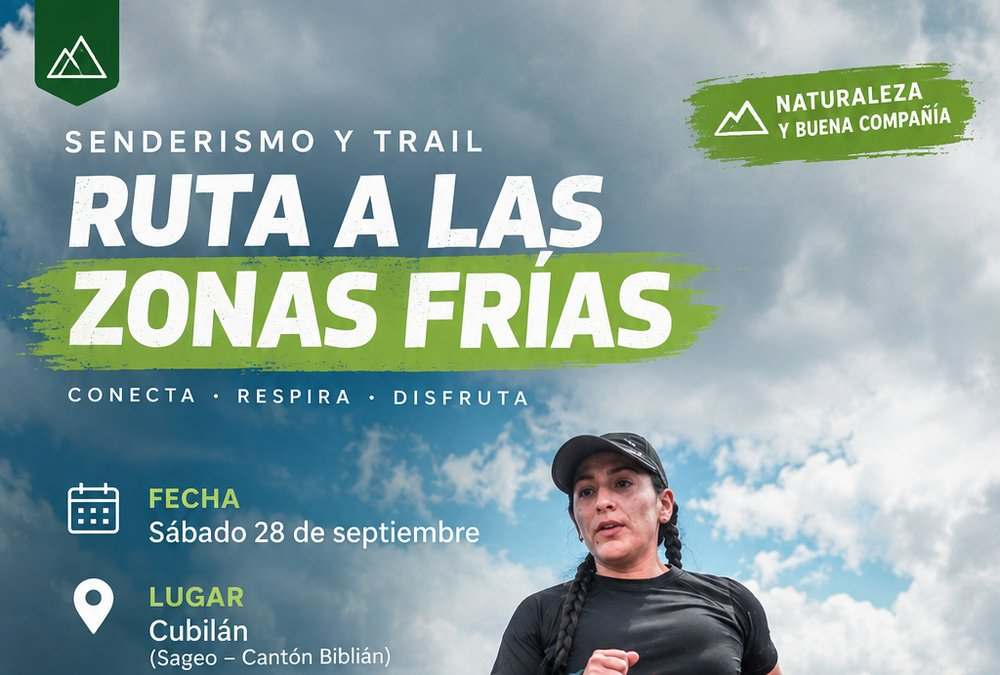

El patrimonio de Biblián

RAÍCES


Las cinco parroquias de Biblián
Jerusalén
San Francisco de Sageo
Nazón
Biblián
Voces
locales


Datos interesantes
-
Unas últimas manos
En Biblián todavía se horma el sombrero de paño, pero ya casi una sola persona lo practica en el centro cantonal. Si nadie lo aprende, este oficio podría desaparecer.

-
Misma piedra que el Santuario
En Sageo hay dos túneles de piedra por donde pasaba el tren. Se construyeron con la misma piedra que el Santuario de la Virgen del Rocío y siguen ahí, a pocos metros del centro parroquial.

-
Carbón para el tren
En Turupamba se sacaba carbón de cuevas cavadas a mano y se llevaba en mulas para el ferrocarril. Casi todos vivían de eso. Hoy solo quedan vestigios en San Luis, en un lugar que todavía llaman "las minas".
-
Aquí hubo una batalla
En Verdeloma, Nazón, se libró en 1820 una batalla por la independencia. El obelisco que la recuerda fue declarado patrimonio cultural, pero muchos todavía no saben que existe.

Próximos eventos

Camping + pachamanca en Padre Rumi
Dos días de campamento en el páramo de Padre Rumi, con una pachamanca: comida andina cocinada bajo tierra con piedras calientes.
Padre Rumi, Jerusalén

Caminata ecoturística al cerro Shuriray
Caminata a la cueva del Señor de Belén y al mirador del cerro Shuriray.
Gruta Señor de Belén, Turupamba

Caminata al páramo Tuñi Sagre
Una caminata guiada desde Nazón hasta el páramo de Tuñi Sagre.
Tuñi Sagre, Nazón

Ruta a las zonas frías
Senderismo y trail de unos 12 km, ida y vuelta, por Cubilán en Sageo.
Cubilán, Sageo

Pregón de fiestas de la Virgen del Rocío
Procesión desde el barrio San Antonio hasta el Santuario en honor a la Virgen del Rocío.
Santuario de la Virgen del Rocío, Biblián